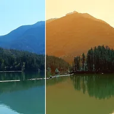

Channel Mixer

Rebuilds the picture from its red, green and blue channels: each channel adds its own Color, then Gamma bends each channel and Offset lifts or lowers all of them.
Settings
| Setting | Type | Range | Default |
|---|---|---|---|
| Red | Color | – | #FF0000 |
| Green | Color | – | #00FF00 |
| Blue | Color | – | #0000FF |
| Red Gamma | Number | 0.01 to 10 | 1 |
| Green Gamma | Number | 0.01 to 10 | 1 |
| Blue Gamma | Number | 0.01 to 10 | 1 |
| Offset | Number | -1 to 1 | 0 |